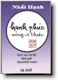

|
BuddhaSasana Home Page |
Vietnamese, with Unicode Times font |
|  |
Hạnh phúc mộng và thực: Thích Nhất Hạnh |
|
CHƯƠNG 4 NHỮNG CHỦ ĐỀ LỚN TRONG KINH TAM DI ĐỀ4.1 Pháp Thoại Ngày 06 tháng 10 n ăm 1994Thưa đại chúng hôm nay là ngày mồng 06 tháng 10 năm 1994, chúng ta đang ở xóm Thượng, trong Khóa Tu Mùa Thu. Phần đầu của buổi pháp thoại hôm nay, tôi dành để kết thúc Kinh Samiddhi, sau đó chúng ta sẽ bắt đầu học về Tứ Vô Lượng Tâm (3). (3) Những giảng dạy về Tứ Vô Lượng Tâm đã được phiên tả và in lại trong cuốn "Thương Yêu theo phương pháp Bụt dạy", Nhất Hạnh, Lá Bối xuất bản, 1995.Kinh Samiddhi có nhiều chủ đề rất quan trọng. Chủ đề thứ nhất là Ý Niệm Về Hạnh Phúc. Ta đã thấy rằng những ý niệm về hạnh phúc có thể là những bẫy sập, giam hãm chúng ta trong vòng khổ đau. Vì vậy mà ý niệm về hạnh phúc nó liên hệ tới ý niệm về những bẫy sập của ngũ dục. Cách đây chừng một tháng, có một đạo hữu từ Hòa Lan sang Làng tu học. Các vị ở xóm Hạ hỏi thăm tại sao các cháu không cùng sang, đạo hữu ấy nói: "Dạ vì các cháu đang vướng vào bẫy ngũ dục". Đạo hữu đó thấy các con mình đang vướng vào những nỗi khổ của ngũ dục, rất khó thoát ra mà ông không làm gì được hết! Đối với không biết giáo pháp đạo Bụt, ngũ dục là con đường của hạnh phúc, là con đường đưa đến hạnh phúc. Ngược lại Kinh Samiddhi nói rằng đó là những nẻo đường tăm tối, khổ đau. Chúng ta phải có lòng thương, sự hiểu biết, và đạo lực khá thâm hậu thì mới giúp họ thoát khỏi những bẫy sập của ngũ dục được, nếu không thì chúng ta chỉ đứng ngoài mà thương hại thôi. Nói rõ ra, không tu học thì không có khả năng giúp người thoát khỏi những bẫy sập ngũ dục. Chủ đề thứ hai của Kinh Tam Di Đề là Hiện Pháp Lạc Trú. Khi vị Thiên nữ hỏi tại sao thầy lại bỏ lạc thú trong hiện tại để đi tìm lạc thú hứa hẹn trong tương lai, tìm cái lạc thú phi thời? Thì thầy Samiddhi nói rằng: Tôi đâu có bỏ hạnh phúc trong hiện tại để đi tìm một hạnh phúc hứa hẹn hão huyền ở tương lai đâu? Chính tôi đã bỏ cái hạnh phúc hão huyền kia để đi tìm một cái hạnh phúc có sẵn trong giây phút hiện tại đấy chứ! Thầy Samiddhi cũng nói thêm với vị Thiên nữ rằng ngũ dục đem lại cho chúng ta những cơn sốt, những nỗi khổ đau, trong khi đó thì pháp hiện pháp lạc trú đem lại hạnh phúc cho chúng ta ngay bây giờ và ở đây, không phải tìm đâu xa. Vì vậy trong kinh có danh từ vượt thoát thời gian (akalika), nghĩa là không có thời gian tính. Đây cũng là một chủ đề rất lớn trong toàn bộ giáo lý của đạo Bụt, và thường được xem là kim chỉ đạo của sự tu học Hiện Pháp Lạc Trú. Tiếc rằng có rất ít Thiền viện và Trung tâm tu học đưa chủ đề này ra để khai triển! Chủ đề thứ ba là Nương Tựa. Nương tựa ở đây là nương tựa vào Pháp, vào một cái gì không phải là ý niệm. Khi sống với Chánh Pháp chúng ta đạt được sự an lạc, sự vững chãi, sự thảnh thơi. Nương tựa vào Pháp còn được gọi là nương tựa vào hải đảo tự thân. Chủ đề thứ tư của Kinh Samiddhi là Mặc Cảm, hay là Mạn. Ba cái mặc cảm hơn người, thua người, và bằng người đều do ý niệm gọi là ngã chấp mà sinh ra. Khi quán chiếu để thấy được sự tương quan, tương liên hay tương tức của vạn pháp, chúng ta thấy được mọi sự sống là một, ta với người, ta với cây cỏ là một. Cũng vậy, sự bình an, niềm hạnh phúc không phải là vấn đề cá nhân, không thể nào có vấn đề hạnh phúc cá nhân. Khi chúng ta vượt thoát được ý niệm về ngã, thì tất cả những sợ hãi, lo lắng, giận hờn, buồn phiền, sẽ tan biến và hạnh phúc có thể có mặt thật sự. Khi niềm vui được xây dựng trên ý niệm về ngã thì niềm vui đó tính cách mong manh, không vững chãi, không đích thực. Chỉ khi nào sự sợ hãi vắng mặt, nỗi lo lắng giận hờn tan biến, thì niềm vui đó mới là niềm vui đích thực mà thôi. Giảng dạy ý niệm về hạnh phúc, Bụt đưa ra ví dụ của một người bị án tử hình. Người tử tội biết rằng trong vòng bảy ngày nữa thì mình sẽ bị đem ra chém đầu. May có sự can thiệp của người thân, án được giảm xuống còn khổ sai chung thân. Khi nghe tuyên án lại ông ta rất đỗi vui mừng, nhảy nhót sung sướng ! Bụt kết luận cái sung sướng vì bản án khổ sai chung thân, đâu phải là cái sung sướng thật? Chỉ vì đem so sánh với bản án tử hình, thì khổ sai chung thân mới được xem là một niềm vui. Thật ra nó có hạnh phúc gì đâu? Biết bao nhiêu người trẻ trên thế giới, vì có những niềm đau mà họ đi tìm hạnh phúc trong năm thứ dục lạc. Khi sống trong năm thú dục lạc, họ không tìm được hạnh phúc chân thật, mà họ chỉ tìm được "niềm vui của ban án khổ sai chung thân", để vùi lấp niềm đau của bản án tử hình mà thôi. Đó là một tấm bi kịch rất lớn của loài người. Với ma túy cũng vậy, ma túy làm cho con người rất khổ đau, nhưng vì "cái niềm đau kia" nó lớn quá, nên mình phải đi tìm ma túy để khỏa lấp. Thật ra ma túy là một bản án khổ sai chung thân để che lấp cái bản án tử hình mà mình đang mang! Thấy được vậy chúng ta sẽ thương, mà thương thì chúng ta phải tu học để có khả năng cứu độ và đưa những người trẻ đó ra khỏi vũng lầy của cuộc đời. Thực tập hiện pháp lạc trú, thực tập nương tựa, thực tập quán chiếu về vô ngã, càng lúc chúng ta càng đạt được sự vững chãi và thanh thơi, hai đặc tính của Niết Bàn. Khi đó, cái hiện pháp Niết Bàn sẽ từ từ hiển lộ ra cho chúng ta tiếp xúc. Tiếp xúc được với Niết Bàn một cách sâu sắc, thì sự vững chãi thảnh thơi của mình sẽ trở thành lớn lao và vững mạnh, lúc đó hạnh phúc mới là hạnh phúc chân thật, mới là hạnh phúc hoàn toàn. Như vậy, từ cái Tích Môn, chúng ta tiếp xúc được với cái Bản Môn. -ooOoo- PHỤ LỤC Góp nhặt những đoạn Pháp Thoại Thiền Sư Nhất Hạnh đã nói trong cùng khóa tu về các vấn đề có liên quan đến việc tu tập hàng ngày của Tăng chúng Làng mai. A1. Giới Luật Trong Đạo Bụt A1. Giới Luật Trong Đạo Bụt(Trong Pháp Thoại ngày 04-9-1994) Những vị Sư cô nào đã thọ giới lớn trong Đại Giới Đàn Hương Tích vừa qua thì nên nhớ theo học lớp của Sư Cô Chân Đức và tìm cách tự mình học thêm về giới luật. Trước thời gian Đại Giới Đàn, Sư Cô Chân Đức có mở một lớp dạy về giới lớn cho các vị giới tử Tỳ Kheo Ni. Rất tiếc là những bài giảng trong suốt hai tuần lễ đó đã không được thâu băng đầy đủ. Tôi hy vọng trong khóa tu này Sư Cô Chân Đức có thể dạy lại những điều mà Sư Cô đã dạy trong mùa hè vừa qua. Ngoài ra, trong khóa Đại Tạng Nam truyền trước đây tôi cũng có giảng một số bài về Ba la đề mộc xoa. Các vị đã thọ giới lớn có thể học lại những bài giảng đó. Cuối năm 1994, tôi sẽ có dịp kiểm điểm lại cách học hỏi và hành trì giới lớn của quí vị. Còn các vị đã thọ giới Sa di và Sa di ni trong giới đàn vừa qua cũng vậy. Vì mới thọ giới nên mình chưa biết nhiều về giới, cho nên quí vị phải bắt đầu học cho thấu đáo giới Sa di và Sa di ni. Như quí vị đã biết, theo truyền thống thiền, chúng ta phải học bốn phần của giới luật Sa di và Sa di ni. Phần đầu tiên là Tỳ Ni Nhật Dụng Thiết Yếu. Phần này gồm những bài thi kệ để thực tập chánh niệm. Ngày xưa khi mới đi tu, tôi đã học những bài thi kệ này bằng chữ Nho, nhưng bây giờ chúng ta đã có sách tiếng Việt, những bài thi kệ này đã được chú giải và in thành sách. Đó là cuốn Từng Bước Nở Hoa Sen. Có khoảng 50 bài thi kệ để chúng ta thực tập chánh niệm trong đời sống hàng ngày. Ví dụ trước khi rồ máy xe hơi chúng ta có một bài kệ để thực tập: Trước khi cho máy nổ, Lấy nước vào ấm nấu nước hay chậu rửa chén cũng vậy. Khi tay chạm vào vòi nước thì ta phải thở và thực tập bài kệ vặn nước: Nước từ nguồn suối cao, Lúc mở đèn, ta nhiếp niệm để đọc bài kệ mở đèn: Thất niệm là bóng đêm, Tất cả các vị đã thọ giới Sa di và Sa di ni đều phải học thuộc lòng những bài kệ đó để thực tập theo. Sư cô Bích Nghiêm mỗi khi lái xe, trước khi mở máy, đều thực tập bài kệ rồ máy xe rất đàng hoàng. Có thực tập những bài kệ đó, ta mới thật sự tu học theo truyền thống thiền. Trong thiền tông, thi ca đóng một vai trò rất quan trọng trong sự thực tập. Thuộc lòng những bài thi kệ trong cuốn Từng Bước Nở Hoa Sen, mình mới thực tập được. Nói như vậy không có nghĩa là chỉ những người thọ giới Sa di và Sa di ni mới phải học những bài kệ đó, còn những người đã thọ giới lớn thì không phải học. Những người đã thọ giới lớn nếu chưa học thuộc những bài đó hay nếu chưa thực tập nghiêm chỉnh thì cũng phải học lại. Không lý các Sư em của mình học và thực tập giỏi mà mình là không làm được như vậy hay sao. Mình có thể học và thực tập bằng tiếng mẹ đẻ. Nếu là người Anh thì ta đọc thi kệ bằng tiếng Anh, là người Thái ta đọc bằng tiếng Thái Lan, người Việt, ta thực tập theo tiếng Việt. Không những các vị đã thọ giới rồi mới thực tập theo phương pháp này, mà những người Tiếp Hiện, sắp thọ giới Tiếp Hiện hay chưa thọ giới Tiếp Hiện cũng phải thực tập những bài thi kệ này. Nếu không thì ta không có cách gì để thực tập chánh niệm trong đời sống hàng ngày cả. Ta phải phối hợp hơi thở với những bài thi kệ để thực tập. Rửa tay thì biết là mình rửa tay, giặt áo thì biết là mình giặt áo, qua cầu thì biết là mình qua cầu ... Phần thứ hai của giới luật Sa Di Luật Nghi Yếu Lược tức là phần nói về giới tướng của mười giới. Chúng ta nên tham khảo giới Tiếp Hiện và Năm Giới để có thể hiểu thêm được nội dung của 10 giới. Nội dung của 10 giới rất giàu có. Vì vậy cho nên 10 giới phải được thực hiện trong tinh thần của Năm Giới và trong tinh thần giới Tiếp Hiện. Sau này sẽ có một cuốn sách nói về 10 giới của người Sa di và Sa di ni (4). (4) Hồi này (1994) cuốn "Bước tới thảnh thơi" dành cho các vị Sa di và Sa di ni chưa ra đời.Phần thứ ba của giới luật Sa di và Sa di ni là Uy Nghi mà ta dịch là "Mindful Manners" hay là "Fine Manners". Có 24 thiên nói về uy nghi, nghĩa là có 24 chương nói về sự thực tập chánh niệm của một Sa di hay Sa di ni. Ví dụ khi vào Chánh điện thì ta phải có tác phong như thế nào, đi chợ thì trong thời gian đi phải có tác phong ra sao v.v... Tại Làng Mai ta đã từng học theo bản văn cổ điển, nhưng bản này đã được ta nghiên cứu và gia giảm. Các vị đã thọ giới Sa di và Sa di ni phải học và phải thực tập cho nghiêm chỉnh. Có một chương dạy về cách làm thị giả, một chương dạy về cách cư xử với những người đã thọ giới lớn, trong đó dạy rất rõ bổn phận của mình đối với những Sư anh hay Sư chị đã thọ giới lớn như thế nào. Tất cả những nghi thức đó mình phải hiểu. Mặc dù mình mới thọ giới Sa di hay Sa di ni và có thể mình chưa biết gì nhiều về nội dung và bản chất của một người Sa di hay Sa di ni. Thọ giới là chuyện dễ nhưng trì giới không phải là chuyện dễ. Mình cần phải học hỏi và hành trì lâu ngày mới được. Cuối năm 1994 ta sẽ có cơ hội kiểm điểm lại cái học và hành của quí vị về giới Sa di, Sa di ni và giới lớn. Tuy phần thứ ba của giới luật có 24 chương, nhưng trong những bài giảng trước tôi có đề nghị thêm vào một số chương khác. Vì sống trong một hoàn cảnh xã hội khác xưa cho nên chúng ta phải có những chương mới. Phần thứ tư là Cảnh Sách. Đây là một bài văn của Thiền Sư Qui Sơn viết bằng thể văn biền ngẫu. Hồi làm Sa di, sau lễ tụng giới tôi hay ra ngoài với các vị Sa di khác để cùng đọc và cùng nghe với nhau 24 chương uy nghi. Đọc xong 24 chương uy nghi rồi thì đọc bài Qui Sơn Cảnh Sách. Trong khi đó thì các Thầy ở lại Chánh điện để tụng giới lớn và giới Bồ Tát. Ngày Bồ Tát tụng giới mình có thể tổ chức thành một ngày rất vui. Ngày đó chỉ có tụng giới và sống chung với nhau trong tinh thần gia đình. Có những giới mình tụng chung được, như Năm giới và giới Tiếp Hiện, nhưng giới lớn thì phải tụng riêng. Việc hành trì các bài thi kệ nhật dụng, tôi muốn quí vị bắt đầu ngay. Bắt đầu học năm bảy bài mà mình thấy thiết dụng nhất trong đời sống hàng ngày và thực tập liền. Ví dụ các bài kệ bật đèn, mở nước, nghe điện thoại v.v... sau đó từ từ học cho hết những bài thi kệ ở trong cuốn Từng Bước Nở Hoa Sen. Phải học thuộc lòng mới thực tập được. Trong khi thực tập, nếu sáng tác thêm được những bài mới thì phải ghi lại để đóng góp cho những bản in sau này của cuốn Từng Bước Nở Hoa Sen. Trong vòng mười hôm nữa tôi sẽ yêu cầu quí vị báo cáo cho biết sự thực tập thi kệ nhật dụng chánh niệm như thế nào. Không phải chỉ có quí vị thọ giới Sa di, và Sa di ni mà quí vị thọ giới khác như giới Tiếp Hiện và giới lớn cũng phải báo cáo, vì thi kệ chánh niệm là những bảo vật quí giá nhất của chúng ta, và thực tập những thi kệ này là một truyền thống của Thiền. Cho nên nếu không thực tập thì không thể gọi là chúng ta đang theo truyền thống Thiền được. Bất cứ một cô chú nào đã vào chùa là phải bắt đầu học thuọc lòng những bài thi kệ và phải đem áp dụng những bài thi kệ đó. Áp dụng thi kệ một thời gian thì con người của mình nó văn minh, tươi mát, đẹp hơn, sáng sủa hơn lập tức. Tôi còn nhớ hồi mới là chú điệu 16 tuổi, một hôm mở cửa đi ra khỏi phòng và đóng cửa lại, tôi đã mở cửa không có chánh niệm, và đóng lại cũng không có chánh niệm. Tuy không đóng một cái rầm như thỉnh thoảng mình vẫn thấy, nhưng biết là tôi không có chánh niệm, nên Sư Ông gọi: "Chú ơi", tôi dạ kính cẩn tới gần để nhận lời chỉ giáo, thì Sư Ông nói: "con đi ra lại, rồi con đóng cửa lại, kỳ này cho nó đàng hoàng hơn". Tôi hiểu và biết là kỳ này mình phải làm cho đàng hoàng. Sư Ông của tôi chỉ dạy có một lần thôi mà từ đó trở đi không bao giờ tôi đóng cánh cửa đó mà không có chánh niệm. Cố nhiên với những cửa khác tôi cũng có thực tập, nhưng với cánh cửa đó, không bao giờ tôi dám mở ra và đóng lại không có chánh niệm. Sư Ông không rầy rà gì hết, Ngài chỉ nói "Con đi ra lại đi, rồi con đóng cửa lại, kỳ này cho nó đàng hoàng hơn". Thành ra bây giờ tôi truyền trực tiếp cho quí vị lời dạy từ Sư Ông của tôi. Như tôi đã nói, khi chúng ta thực tập thi kệ nhật dụng để giữ chánh niệm, thì con người của chúng ta sẽ trở thành văn minh hơn, đẹp đẽ hơn, phong thái của chúng ta tự nhiên nho nhã, thanh tao hơn rất nhiều, và đó là một cách trang điểm đẹp nhất của con người. Các bà mẹ Việt Nam thường nói "là con gái thì phải đi đứng cho có ý tứ, nằm ngồi cho có ý tứ", vì khi người con gái đi đứng nằm ngồi có ý tứ thì người con gái đó đẹp hơn lên gấp bội. Không hiểu tại sao các bà mẹ chỉ dạy con gái như vậy mà không dạy cho con trai những điều tương tự, làm như con trai đi đứng có ý tứ nằm ngồi thì không đẹp hơn. Họ cũng đẹp hơn lên giống như con gái vậy, có khi còn đẹp hơn là khác! Vì vậy cho nên con trai hay con gái cũng đều phải đi đứng, nằm ngồi cho có ý tứ. Các bà mẹ có thể không hiểu làm như vậy là thực tập chánh niệm, nhưng mà biết rằng nếu con mình đi đứng, nằm ngồi có ý tứ thì sẽ đẹp hơn nhiều. Ý tứ là một món trang sức tuy không tốn tiền mua nhưng rất quí giá, nó làm cho con người đẹp hẳn hơn lên. Có ý tứ tức là có chánh niệm. Trong Kinh An Ban Thủ Ý tức là kinh dạy về hơi thở có ý thức, có chữ thủ ý. Thủ ý tức là nắm lấy cái ý của mình, duy trì cho cái ý của mình nó sống, đốt lên ngọn đèn chánh niệm ở trong con người của mình để cho nó cháy thật. Nuôi dưỡng ánh sáng sáng của chánh niệm bằng hơi thở, gọi là an ban thủ ý. Ta biết rằng những bài thi kệ để thực tập chánh niệm bắt nguồn từ Kinh Hoa Nghiêm. Rất nhiều bài ở trong sách Tỳ Ni Nhật Dụng Thiết Yếu được lấy trực tiếp từ Kinh Hoa Nghiêm. Thêm vào đó, chúng ta cũng đã dựa vào truyền thống Kinh Hoa Nghiêm để sáng tác thêm những bài khác, thành ra thực tập thi kệ chánh niệm là một thực tập đã có lâu đời và rất truyền thống. A2. Cách Nghe Và Nói Pháp Thoại Xin nhắc lại vài điều để quí vị biết cách nghe Pháp thoại. Theo phương pháp thực tập ở Làng Mai thì nghe Pháp thoại không phải là học giáo lý để có những kiến thức về Đạo Bụt. Trong các trường học ngoài đời, từ tiểu học cho đến đại học, mình đã liên tục học theo phương pháp thu nhận kiến thức, cố gắng "học năm, ba chữ để làm vốn liếng!". Nghe Pháp thoại ở Làng Mai không có mục đích đó. Khi nói Pháp thoại , cố nhiên tôi dùng ngôn ngữ và ý niệm để diễn đạt, nhưng ngôn ngữ và ý niệm chỉ là những phương tiện để giúp cho quí vị thấy được những điều vưọt khỏi tầm ngôn ngữ và ý niệm. Nếu quí vị chỉ tiếp nhận bài pháp thoại như là những ý niệm, những danh từ thì chẳng ích lợi gì mà nhiều khi quí vị còn bị kẹt nữa. Điều này Bụt dạy rất kỹ: Nhất thiết tu đa la giáo, như tiêu nguyệt chỉ, có nghĩa là "Tất cả những kinh điển mà tôi dạy, nó như là ngón tay để chỉ mặt trăng, quí vị đừng có lầm ngón tay của tôi là mặt trăng". Bụt đã cảnh cáo như vậy, thành ra những giáo lý về Vô Thường, Vô Ngã, Niết Bàn, Tam Giải Thoát Môn v.v... ta phải nghe như thế nào để có thể trực tiếp kinh nghiệm với những điều đó, sử dụng một cách thông minh những ngôn từ và ý niệm mà Bụt sử dụng để đạt được kinh nghiệm trực tiếp. Nếu nghe điều gì mà nắm lấy điều đó như một ý niệm, một sự thật, thì đó là một điều rất trái với tinh thần Đạo Bụt, và nó sẽ không dẫn qúi vị đến sự chuyển hóa. Ngay trong thời Đức Thế Tôn còn tại thế cũng có nhiều thầy bị như vậy, vì thế mà Bụt đã dạy Kinh Người Bắt Rắn, Trong Kinh này Bụt dạy rằng tiếp nhận giáo lý mà tiếp nhận như những ý niệm thì có thể nguy hiểm cho mình và cho những người khác, phải thông minh như là người biết bắt rắn, nếu không thì sẽ bị rắn cắn. Cách nghe pháp thoại có lợi lạc nhất là nghe pháp thoại để nương vào đó mà thực tập, đừng có bị kẹt vào danh từ và ý niệm. Theo tâm lý học đạo Bụt thì những điều Bụt dạy, những tuệ giác mà Bụt muốn trao truyền, đều đã có sẵn dưới hình thức những hạt giống ở trong tâm ta. Hạt giống của tuệ giác, hạt giống của thương yêu v.v... đều có sẵn trong đất tâm của ta. Những hạt giống quí báu đó có thể bị chôn rất sâu ở trong tâm của mình. Bấy lâu nay, xã hội, cha mẹ, bạn bè ít ai tưới tẩm được những hạt giống đó. Họ chỉ tưới tẩm những hạt giống đau khổ, giận hờn, buồn bã, kiêu căng, lo lắng của chúng ta mà thôi, vì vậy khi nghe giáo lý, ta nên mở lòng ra để cho giáo lý đó, cũng như một trận mưa pháp, thấm tới những lớp đất dưới sâu để những hạt giống tốt của mình như hạt giống tuệ giác, hạt giống từ bi v.v... nhờ cơn mưa pháp mà có cơ hội nảy mầm. Trong thời Bụt tại thế, có nhiều người đã được giác ngộ trong khi nghe pháp thoại, là vì những người đó đã không dùng ý niệm mà nghe, không dùng lý trí mà nghe. Lý trí của mình nó chỉ là một phần nhỏ của tâm mình mà thôi. So với tàng thức thì ý thức chỉ như là một hột bắp so với một trái bí rợ. Vì vậy cho nên trong nghe Pháp thoại, đừng dùng ý thức nghĩa là đừng suy nghĩ, đừng so sánh, đừng phê phán, đừng phản ứng. Đây là một điều rất quan trọng. Nếu mình dùng trí năng của mình mà so sánh, mà suy nghĩ, mà phán đoán thì mình làm mất cơ hội cho Pháp Vũ thấm sâu vào những lớp đất bên dưới tâm ta. Cũng như trời mưa, thay vì để cho nước thấm vào đất thì mình lấy một tấm nylon để hứng, kết quả là mình không cho những hạt giống dưới đất tâm có điều kiện nảy mầm! Mình làm hại những hạt giống dưới đất, vì vậy mà mình không được hoa trái từ đất tâm! Cho nên trong khi pháp thoại, dầu cho những điều mình đang nghe trái chống với những điều mình đã hiểu, mình cũng đừng phê phán, đừng đối chất. Những đìều mình đã hiểu có thể là sai lầm, và chính những ý niệm đó của mình về giáo lý là bức tường ngăn cản, không cho lời Pháp thấm vào đất tâm, rất là uổng! Mình phải tháo gỡ bức tường đó đi, thì lời pháp mới có thể rơi vào chiều sâu của tâm thức được. Điều này mình phải tập mới làm được, tại vì mình đã quen cách học, cách nghe đó ở trường rồi. Mình đã quen tiếp nhận bằng trí năng, quen so sánh, phê phán, lý luận trong lúc nghe giảng. Vì vậy trong khi nghe pháp mình phải cho anh chàng lý trí đi nghỉ mát, và mở lòng ra cho tâm địa của mình được đón nhận những lời pháp. Phải cho những lời pháp đó, những cơn mưa pháp đó một cơ hội để một lúc nào đó, có thể ngay tại chỗ, có thể năm bảy ngày sau, có thể năm sáu tháng sau, khi cái hạt giống của tuệ giác, của thương yêu, của hiểu biết trong tâm mình được thấm nhuần chất nước mát của pháp, được nảy mầm một cách rất là mầu nhiệm. Vì vậy trong lúc nghe giảng Pháp, tôi thường nói rằng quí vị đừng suy nghĩ, đừng so sánh, đừng phê phán. Thà quí vị vừa nghe vừa ngủ gục còn hơn vừa nghe vừa suy nghĩ, vì trong khi mình ngủ gục anh chàng lý trí vắng mặt, pháp vũ sẽ có một ít cơ hội đi vào tiềm thức của quí vị. Ngược lại, khi tỉnh táo mà quí vị dùng lý trí để đón nhận lời Pháp thì giống như quí vị có tấm nylon để ngăn nước mưa, có bức tường để dội trái banh ra ngoài, không thâu nhập được gì cả, rất uổng. Trong Thiền môn có loại ngôn ngữ nhằm phá vỡ cách nghe, cách nhận của thiền sinh. Ví dụ có một thiền sinh sau khi nghe giảng về Phật Tánh ở các loài, một hôm lên hỏi vị Thiền Sư: "Bạch Thầy, con chó có Phật tánh hay không?" Thầy trả lời "Không". Câu trả lời làm cho thiền sinh hoang mang tột độ vì trước đó chàng đã nắm chắc ý niệm muôn loài đều có Phật tánh! Sở dĩ vị thiền sư trả lời như vậy là vì chàng thiền sinh đó học theo kiểu giáo điều. Chàng đã tiếp nhận câu "Tất cả mọi loài đều có Phật tánh" như là một ý niệm, và ý niệm đó có ích lợi gì đâu? Điều quan trọng là mình có tiếp xúc được với Phật tánh đó ở trong mình hay không. Cũng như chánh niệm, điều quan trọng là mình có tiếp xúc được với năng lượng chánh niệm ở trong mình hay không, còn mình biết và hiểu chánh niệm như là một ý niệm thì giống như mình nắm lấy ngón tay chỉ mặt trăng, đâu còn thấy mặt trăng nữa! Dầu cho chàng thiền sinh kia học thuộc lòng được cả ngàn điều như là "tất cả chúng sinh đều có Phật tánh", "tất cả đều là vô thường; tất cả đều là vô ngã", "tam giải thoát môn là Không, Vô tướng, Vô tác" v.v... rồi cứ lập đi lập lại các câu đó mỗi ngày vài ngàn lần thì ích lợi gì cho đời sống của ai đâu? Điều cần thiết là mình thực tập, mình trực tiếp chứng nhập vào những chân lý đó. Trong thời gian vận động ngừng bỏ bom tại Việt Nam, một hôm tôi dẫn đầu một đoàn diễn hành chừng vài ngàn người tại thành phố Philadelphia thì có một nhà báo tới hỏi: "Thầy từ miền Bắc tới hay từ miền Nam tới?" Lúc đó tôi biết ý của ông nhà báo này, từ miền Bắc tới là Cộng sản, mà tới từ miền Nam là chống Cộng. Do đó tôi đã nói "Tôi từ miền Trung tới". Câu trả lời làm cho ông mất khí giới! Ông ta chỉ có hai cái hộp: miền Nam và miền Bắc, và ông muốn bỏ mình vào một trong hai hộp đó. Ông không có cái hộp thứ ba, cho nên ông lúng túng. Đó là ngôn ngữ của Thiền, hay Thiền Ngữ. Tôi không muốn làm ông nhà báo cụt hứng, nhưng vì đã được huấn luyện lâu ngày trong thiền môn, cho nên trong những trường hợp dó tôi phải dùng thiền ngữ để cho người đối thoại với mình có một cơ hội. Chính nhờ cái sự hoang mang đó, ông nhà báo mới xét lại việc bỏ người Việt vào một trong hai cái hộp là không đúng. Phải tạo ra cái hộp thứ ba hay cái hộp thứ tư. Tuy vậy không có cái hộp nào có thể chứa đựng được thực tại hết! những cái phạm trù tư tưởng, người ta nghĩ là có thể chứa được thực tại, nhưng trong đạo Bụt chúng ta đã học rằng các phạm trù sanh, diệt; một, nhiều; tới, lui; có, không; đều là những phạm trù không thể chứa đựng được thực tại! Cho nên ngôn ngữ của Thiền có mục đích đập vỡ cái khái niệm của mình, đập vỡ những cái hộp, cái bình chứa ý niệm của mình để cho mình có cơ hội tiếp xúc với thực tại thênh thang, không bao giờ bị gò bó trong vùng ý niệm. Nói Pháp thoại cũng vậy, phải giảng cho thật khôn khéo để những ngôn từ mình dùng, những ý niệm mình diễn tả không bị người nghe nắm lấy. Mình phải làm thế nào để người nghe nương vào những ngôn từ và ý niệm mình đưa ra để người ta kinh nghiệm được cái mà mình muốn chỉ cho họ thấy, điều đó rất là quan trọng. Tôi rất thận trọng trong khi giảng Pháp. Lúc lên bảng, viết chữ hạnh phúc bên này và chữ đau khổ bên kia, tôi đã thấy nguy hiểm cho quí vị rồi. Vì vậy tôi đã lưu ý quí vị rằng "Vạch đường phân chia giữa hạnh phúc và khổ đau là có thể làm hại biết bao nhiêu người! Quí vị phải biết rằng cái này được làm bằng cái kia, và cái kia được làm bằng cái này. Dầu mình có gạch đường phân chia này đi nữa, mình phải thấy có tính cách tương tức, tương nhập của vạn pháp thì mình mới có cảm giác an ninh". -ooOoo- Ðầu trang | Mục lục | 01| 02 | 3.1 | 3.2 | 3.3 | 3.4 | 3.5 | 3.6 | 04 |
Source: Trang web Quảng Đức, www.quangduc.com
[Trở
về trang Thư Mục]
last updated: 01-04-2005